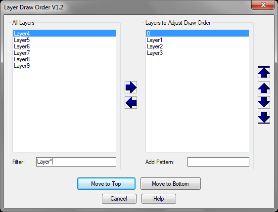
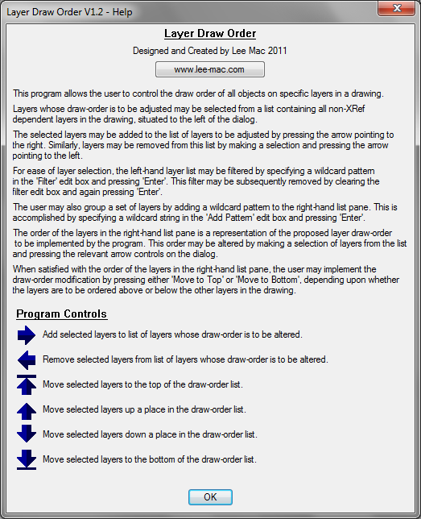

Layer Draw Order
This page is delivered for consistency purposes only, as part of the LeeMac sample module of DynALisp, which shows how DynALisp turns existing AutoLISP programs into a module. The program and its description are the work of Lee Mac, who keeps all the credit for them. The original page, with the latest version, is on Lee Mac's website: https://lee-mac.com/layerdraworder.html
| Function Syntax | LM-LayerDrawOrder – original syntax: LDOrder (see aliases) |
| Current Version | 1.2 |
| Compatible with AutoCAD for Mac? | No |
| Compatible with AutoCAD LT? | Yes |
| Original Page | lee-mac.com/layerdraworder.html |
Program Description
This program enables the user to control the draw-order of all entities on each layer in a drawing, relative to other layers.
Upon calling the program with LDOrder at the AutoCAD command-line, the user is presented with a dialog displaying two list panes - the left-hand pane listing all non-XRef dependent layers present in the drawing.
The user may make a selection of layers whose draw-order is to be altered from the left-hand list pane and add these layers to the list pane on the right-hand side of the dialog by pressing the arrow button pointing to the right. Similarly, layers may be removed from the right-hand list by making a selection of layers pressing the arrow button pointing to the left.
For ease of layer selection, the left-hand layer list may be filtered by specifying a wildcard pattern in the 'Filter' edit box and pressing 'Enter'. This filter may be subsequently removed by clearing the filter edit box and again pressing 'Enter'.
The user may also group a set of layers by adding a wildcard pattern to the right-hand list pane. This is accomplished by specifying a wildcard string in the 'Add Pattern' edit box and pressing 'Enter'.
The order of the layers in the right-hand list pane is a representation of the proposed layer draw-order to be implemented by the program. This order may be altered by making a selection of layers from the list and pressing the relevant arrow controls on the dialog.
When satisfied with the order of the layers in the right-hand list pane, the user may implement the draw-order modification by pressing either 'Move to Top' or 'Move to Bottom', depending upon whether the layers are to be ordered above or below the other layers in the drawing.
More information about program usage may be found by pressing the 'Help' button.
Program Preview

Help Dialog

Bundled program notes
;;------------------=={ Layer Draw Order }==------------------;;
;; ;;
;; Allows the user to control the draw order of all objects ;;
;; on a layer relative to other layers in the drawing. ;;
;;------------------------------------------------------------;;
;; Author: Lee Mac, Copyright © 2011 - www.lee-mac.com ;;
;;------------------------------------------------------------;;
;; Version 1.2 - 20-06-2011 ;;
;;------------------------------------------------------------;;
Command Names And Aliases
As in every DynALisp module, each program of this sample module has one main command, named LM-*, and the original command names of Lee Mac's page are kept as its aliases: they run the same command, and can be added, renamed or removed in Dyl-Suite (saved in Resources\Aliases.csv).
| Command | Aliases | Name |
|---|---|---|
| LM-LayerDrawOrder | LDORDER | Layer Draw Order |